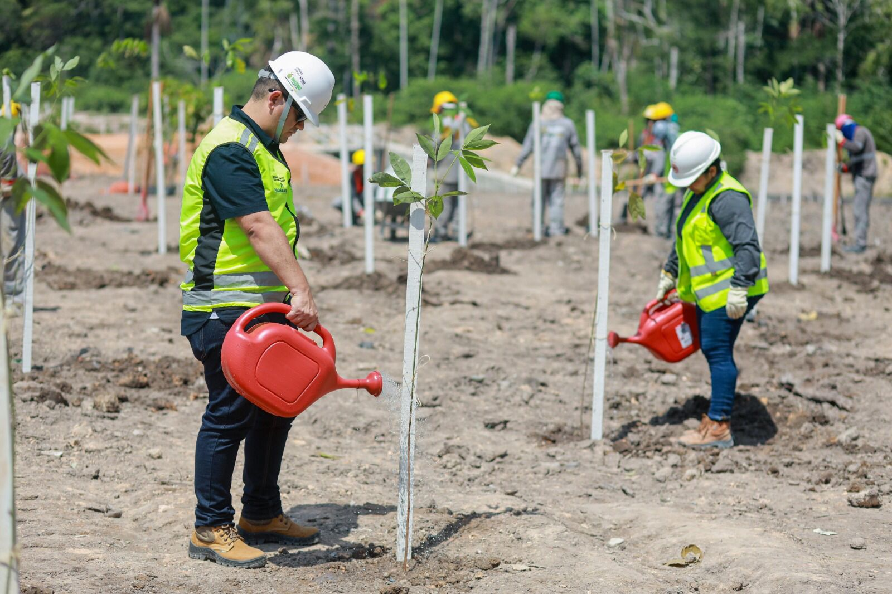

Sobre a ONG Verde
A ONG VerdeViva é uma organização sem fins lucrativos dedicada à preservação do meio ambiente e à promoção da sustentabilidade. Atuamos em projetos de reflorestamento, coleta seletiva e educação ambiental, com o objetivo de proteger a natureza e inspirar ações conscientes em nossa comunidade.

Nossos Projetos
Desenvolvemos ações voltadas à conservação ambiental, campanhas de limpeza e programas educativos sobre sustentabilidade. Cada projeto visa engajar pessoas para transformar pequenas atitudes em grandes mudanças.
Seja um Voluntário
Junte-se a nós e faça parte da transformação verde! Ser voluntário na ONG Verde é uma oportunidade de contribuir com o meio ambiente, aprender novas habilidades e ajudar diretamente em ações de impacto positivo.
Clique aqui para se cadastrarInformações de Contato
Email: contato@ongverde.org.br
Telefone: (11) 4002-8922
Endereço: Rua das Árvores, 100 - São Paulo/SP